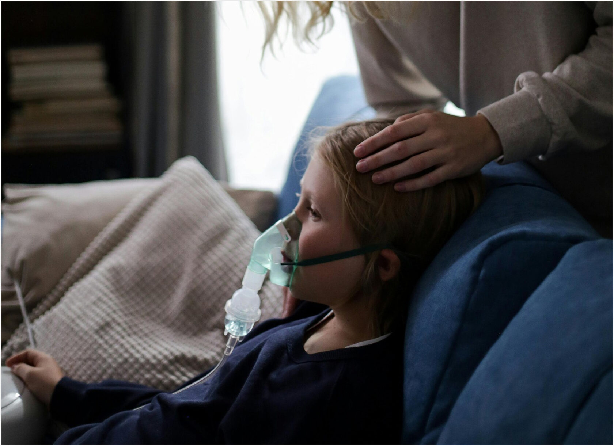
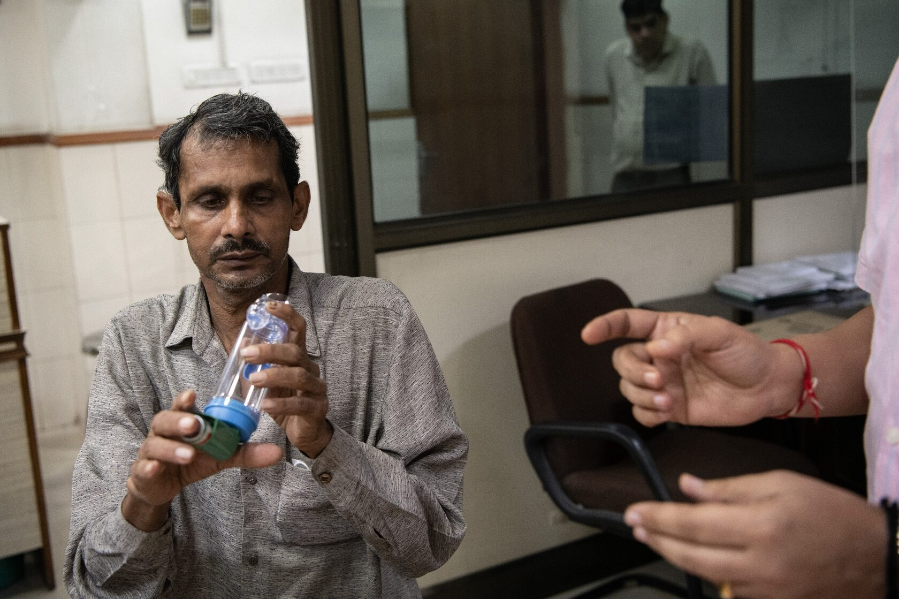
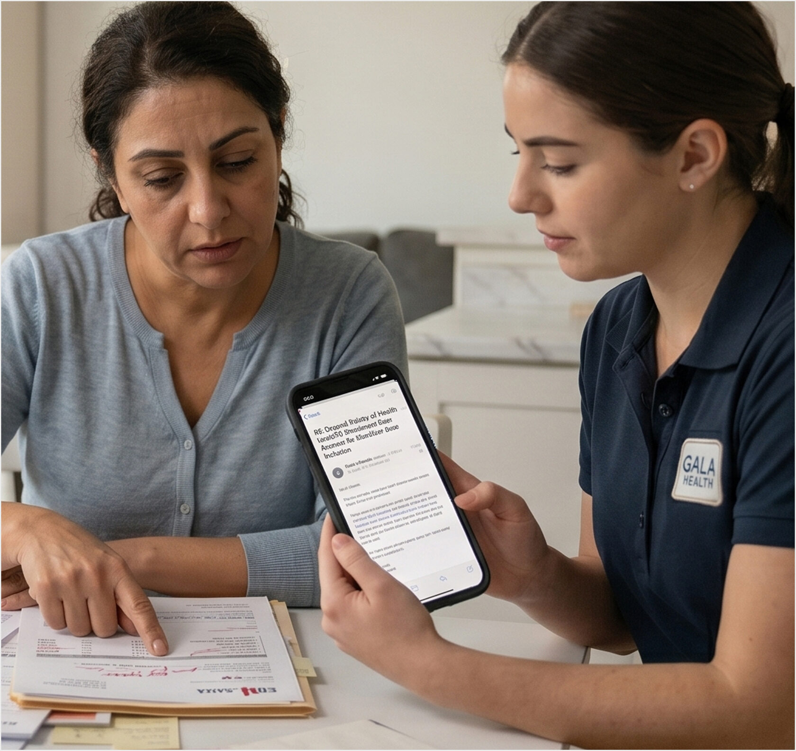

Caregiver Inclusion and Support

Informal Caregivers
Chronic respiratory diseases (CRDs) are never experienced alone. Behind every inhaler, oxygen cylinder, and midnight crisis stands someone else awake — listening, monitoring, and carrying the emotional weight of uncertainty. Most are not professionals. They are parents, spouses, daughters, sons, grandparents, and friends. They are unpaid, rarely trained, and largely invisible in health policy and financing discussions. GALA Health works to change that.
Systemic Blindspot
Our focus is to make informal caregivers of people living with CRDs visible, valued, and supported — in policy, health systems, workplaces, and public understanding. Because respiratory disease is not an individual condition. It is a household reality.

Why Caregivers Matter
Caregivers of people with asthma or COPD often become first responders during breathlessness crises, medication supervisors, oxygen coordinators, health system navigators, emotional stabilisers, and night-time sentinels. Yet they are rarely counted in burden statistics, included in national respiratory strategies, recognised in economic analyses, supported by workplace policy, or offered structured psychological support. Health systems measure patients. They do not measure the lives that reorganise around them.

What we do
Advocate for visibility
We work to ensure informal caregivers are included in CRD burden assessments, reflected in national respiratory plans, integrated into NCD investment cases, recognised in Universal Health Coverage frameworks, and considered in workplace and social protection policy. What is not counted is not prioritised.
Elevate the caregiver voice
We document and communicate the realities of caregiving: the endurance burden of COPD, the vigilance burden of childhood asthma, the psychological toll of living near breathlessness, the economic strain of unpaid care, and the inequities faced in low-resource settings. We bring these realities into global health discussions, policy platforms, and financing conversations.
Shape policy and systems change
We engage with governments, multilateral agencies, employers, and respiratory health networks to promote policies that recognise unpaid care as part of the disease ecosystem — supporting caregiver mental health, enabling flexible employment protections, strengthening community-based respiratory support, and reducing the invisible economic burden carried by families.
Provide practical resources
While our primary role is advocacy and systems change, we also support educational materials tailored to informal caregivers, translate clinical guidance into daily support, promote crisis preparedness tools, share evidence-based coping strategies, and connect caregivers to trusted information — reducing isolation and increasing confidence, especially when breath feels fragile.
We recognise two distinct caregiver realities: endurance burden (often in COPD, intensifying gradually over years) and vigilance burden (often in childhood asthma, where unpredictability drives constant alertness). Both are profound. Both deserve recognition. We also acknowledge that caregiving differs dramatically between high-income and low-resource settings — where informal caregivers may compensate for fragile health systems, limited oxygen access, and inconsistent treatment.
Two Caregiver Realities


We want caregivers counted in global CRD burden data. Caregiver wellbeing integrated into national respiratory strategies. Policy recognition of unpaid care. Stronger protections for working caregivers. Reduced psychological isolation. Health systems that reflect lived reality.
The Impact We Seek
Behind Every Breath
Because we have counted the disease too narrowly. Chronic respiratory disease is not just a diagnosis. It is reorganised sleep, restructured work, interrupted nights, silent vigilance, quiet endurance.
Behind every breath is someone helping to hold it steady. They deserve to be seen.